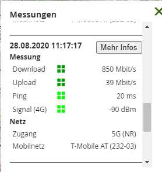
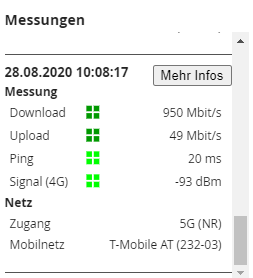
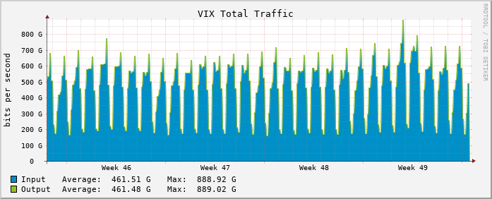
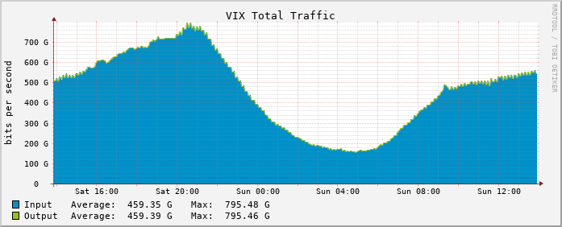

habe von einem 4G auf einen 5G Tarif umgestellt weil ich abends zur Primetime schlechte Latenz und niedrige Downloadraten hatte. Bis jetzt war ich mit dem 5G Tarif sehr zufrieden - Niedrige Latenzen und einigermaßen Höhe Downloadgeschwindigkeit auch abends.
Alles in allem ist es jetzt aber wieder so wie damals mit dem 4G Vertrag.
Ich benutze den Huawei 5G CPE Pro 2 Router. Für sowohl 4G als 5G wird voller Empfang angezeigt. Mein LAN/WLAN sollte nicht verantwortlich für schlechte Werte sein.
Meine Vermutung ist nun dass 4G zur Übertragung des Signals verwendet wird. Möglicherweise ein Problem beim Sender...
Wohne in 5020. Kann es sein dass es dahingehend aktuell Probleme gibt? Hat sonst noch jemand eine Vermutung woran es liegen könnte?
Johann Schallinger
Ich habe Abends zu Primetime auch nur zw. 1-2Mbit/s trotz 75 Mbit/s Vertrag
Hatte heute Freitag sogar 69 Mbit/s erreicht ein deutliches Zeichen für eine anhaltende Netzüberlastung zur Hauptsendezeit
Christian_E
Ja definitiv.
Spiegelt auch meine Erfahrung.
Gestern Abend eine Katastrophe mit Werten nur noch bei 1 oder 2 MBit. Normalerweise hab ich am Abend 30 bis 40 Mbit.
Definitiv macht sich der LockDown weiter sehr bemerkbar und so schnell wird sich das nicht ändern.
Egal ob 4 oder 5G - wir arbeiten in einem shared Medium und da ist ein LockDown natürlich heftig.
Da müssen wir durch, denn alle wollen am Abend streamen oder surfen - da ist es dann wie bei Verkehr am Abend - nichts geht mehr
Johann Schallinger
Hallo
Habe gerade bei der Magenta Hotline angerufen und mit einem Techniker gesprochen, der mir zu gleichen Kosten auf die höchste Priorisierung (250Mbit/s)raufsetzt
Das heißt, da es verschiedene Verträge mit verschiedene Download Geschwindigkeiten gibt ist da Softwaremäßig eine Geschwindigkeitsdrossellung aktiv
Bedeutet wenn mehrere Nutzer am gleichen LTE Mast verbunden sind bekommen jene mit der höheren Priorisierung den schnellsten Downloadspeed, in der Theorie zumindest :-)
Bin gespannt ob das tatsächlich etwas bringt muss dann denn Router neu starten damit die Einstellungen übernommen werden
Werde heute Abend um 20.00 wieder ein paar Speedtests machen und hier berichten ob diese höhere Priorisierung ein schnelleren Downloadspeed gebracht hat.
mfG Johann
Ganacci
Mit 5G hat es wie gesagt eine Zeit lang auch abends reibungslos funktioniert.
Ich teste regelmäßig meine Verbindung. Hier der Test vom 27.11 zur Primetime:
Download 43 Mbit/s von 250 Mbit/s, Upload 26 Mbit/s von 25Mbit/s, Latenz 25ms
Gestern (03.12.) sah es so aus:
Download 0,13 Mbit/s von 250 Mbit/s, Upload 12 Mbit/s von 25Mbit/s, Latenz 310ms
Mir ist schon klar, dass es ein shared Medium ist, aber wie ist es zu erklären dass sich die Werte dermaßen verschlechtert haben? Mit meinem 4G Internet hätten mich solche Werte nicht gewundert...
Aufgefallen ist mir die Verschlechterung letzte Woche als ich CL gestreamed habe. Damals habe ich das darauf geschoben.
Christian_E
Cool!
Ja bitte sag Bescheid, ob sich da was getan hat,
Christian_E
vor 1 Minute schrieb Ganacci:
Mit 5G hat es wie gesagt eine Zeit lang auch abends reibungslos funktioniert.
Ich teste regelmäßig meine Verbindung. Hier der Test vom 27.11 zur Primetime:
Download 43 Mbit/s von 250 Mbit/s, Upload 26 Mbit/s von 25Mbit/s, Latenz 25ms
Gestern (03.12.) sah es so aus:
Download 0,13 Mbit/s von 250 Mbit/s, Upload 12 Mbit/s von 25Mbit/s, Latenz 310ms
Mir ist schon klar, dass es ein shared Medium ist, aber wie ist es zu erklären dass sich die Werte dermaßen verschlechtert haben? Mit meinem 4G Internet hätten mich solche Werte nicht gewundert...
Aufgefallen ist mir die Verschlechterung letzte Woche als ich CL gestreamed habe. Damals habe ich das darauf geschoben.
Also 0,13 ist heftig. Da wird selbst die Mindestgeschwindigkeit (schau mal in deinen Vertrag) nicht mehr erreicht.
Bei diesem Masten geht nichts mehr - da ist selbst Überlastung kein Thema mehr - da ist die Versorgung zusammen gebrochen.
Würde ich dem Support mit der Info zum Standort mitteilen, denn hier bist du schachmatt.
Johann Schallinger
0,13 Mbit/s sind schon heftig 😮 und ich dachte meine 0,5 Mbit/s wären schon mies😮
Christian_E
Mit 0,5 bis du eh schon fast 4x so schnell...
Aber lustig ist das alles leider gar nicht.
Ganacci
Ja mal schauen, dachte halt dass das Problem mit 5G behoben ist. Echt frustrierend, glaube da bringt aktuell auch eine Hochstufung nichts. Werde heute wieder testen, vielleicht ist es ja auch nur ein vorübergehendes, technisches Problem am Masten. Wäre halt super wenn es dazu Störungsinfos von Magenta geben würde.
Johann Schallinger
Bei mir ist es sicher kein technisches Problem am Masten weil sich die Geschwindigkeitseinbrüche schon seit mehreren Monaten immer um die selbe Uhrzeit auftreten
Heute Vormittag habe ich zum Beispiel zw. 40 und 60Mbit/s erreicht was voll OK wäre
Also weiß ich das das Problem nicht an einer falschen Routereinstellungen oder der Signalstärke liegt, sondern rein an einer Netzüberlastung, da die Geschwindigkeitseinbrüche immer um die selbe Uhrzeit stattfinden
Christian_E
Stimmt.
Wenn die Werte außerhalb der PrimeTime passen, dass ganz klar: Überlastung.
Und da gibt es nur noch wenige Möglichkeiten.
Evtl. mittels Richtantenne auf einen anderen Sender aber dieser Aufwand ist in der Regel wenig attraktiv. Zumindest aber kann es helfen...
Johann Schallinger
Vor einer Woche wurde mir von einem Magenta Techniker erzählt er werde meinen Router von seiner Zentarale aus umrouten das er sich an einen anderen Masten einwählt was ein Märchen war
Hatte den Router extra an die andere Fensterseite meiner Wohnung gestellt und neu gestartet und wieder das gleiche Ergebnis 1-2Mbit/s um 20.00
Wenn keine Verbesserung eintritt werde ich auf eine vorzeitige Vertragsauflösung drängen
mfG
Christian_E
Also ich glaub nicht, dass sich ein Router "umrouten" lässt.
Das ergibt doch wenig Sinn - dafür ist das Medium viel zu dynamisch.
Wenn du den Router an ein anderes Fenster stellst und der Router bekommt da ein besseres Signal, dann macht der Router das von ganz alleine. Da muss man nichts verstellen...
Johann Schallinger
Stimmt
Mich wundert nur das mir der Magenta Techniker so rein Märchen erzählt 😮
Rexalius2000
5G ist leider wie bereits erwähnt auch ein shared Medium. Mobiles Internet wurde nicht für eine dauerhafte Standortnutzung erschaffen. Eine Alternative zu einer Stabilen Anbindung über Kabel/DSL oder sogar FTTH wird 5G nie sein.
Die Preise für diese Technologie fallen und das Netz geht wie am Anfang von LTE wieder in die Knie.
Johann Schallinger
Was mich dabei stört ist das von Magenta Verträge mit bis zu 500Mbit/s angepriesen werden, wohl wissend das dies nur theoretische Werte die nur im Labor funktionieren sind
Meiner Meinung ist das schon Irreführung und Täuschung von Kunden wenn Geschwindigkeiten versprochen werden die in der Realität nie erreicht werden
Das ist so wie wenn mir VW Elektroauto mit 900km Reichweite verkaufen würde
Rexalius2000
vor 21 Minuten schrieb Johann Schallinger:
Was mich dabei stört ist das von Magenta Verträge mit bis zu 500Mbit/s angepriesen werden, wohl wissend das dies nur theoretische Werte die nur im Labor funktionieren sind
Naja, so ist das auch wieder nicht den es sind immer bis zu Werte die niemals versprochen werden können. Schon alleine etwas Regen oder Schneefall kann eine Verbindung über Funk stark beeinflussen sowie natürlich auch die Auslastung der Mobilfunkzelle.
Aber bei besten Bedingungen und ca. 250 Meter von der 5G Stadion entfernt sind diese Werte ohne Probleme möglich die natürlich auch Schwanken was ganz normal ist.


Bearbeitet
von Rexalius2000
Johann Schallinger
Habe Gestern so gegen 20.00 ein paar Speedtests gemacht und Wunder bewirkt eine höhere Priorisierung nicht
Hatte so um 2-10 Mbit/s Downloadspeed vor 20.00 schwankte er zwischen 3 und 30Mbit/s
Jetzt heute Früh habe ich wieder die vollen 69Mbit/s
Wenigstens sah ich gestern Abend keinen Ladebalken
Christian_E
Dachte ich mir...
Eines ist noch klar - man kann natürlich den Standort des Routers verändern und beobachten, ob ggfs. ein anderer Sender mehr hergibt aber ich bleibt dabei. Bei dir ist es ein massives Thema der Auslastung.
Bei mir übrigens gestern sehr ähnlich und selbst jetzt bin ich nur noch bei der halben Geschwindigkeit, obwohl am Vormittag mehr gehen sollte...
Ja leider sehr bescheiden.
Mal sehen, ob sich das in der nächsten Woche ein klein wenig entspannt.
Aber im Grunde ändert sich an der Ausgangsbeschränkung am Abend nicht viel und damit sind meine Hoffnungen nicht sehr hoch.
Rexalius2000
vor 8 Stunden schrieb Christian_E:
Aber im Grunde ändert sich an der Ausgangsbeschränkung am Abend nicht viel und damit sind meine Hoffnungen nicht sehr hoch.
Meine Hoffnungen sind auch nicht sehr hoch wenn man sich die Traffic Statistik des
VIX
näher anschaut. Natürlich sind das nicht alles Mobile Internet Zugänge aber wenn man sich in einschlägigen Foren umschaut haben die Beschwerden seit dem Lockdown ziemlich zugelegt. Man darf aber auch nicht vergessen das die kältere Jahreszeit anrückt, und da sind sowieso viele Menschen zuhause und streamen was so manche Mobilfunkstadion wieder zum glühen bringt. Man kann nur auf einen sehr schellen FTTH Ausbau hoffen den 5G ist sicher keine Lösung für einen stabilen Internetzugang.


Christian_E
vor 2 Stunden schrieb Rexalius2000:
Meine Hoffnungen sind auch nicht sehr hoch wenn man sich die Traffic Statistik des
VIX
näher anschaut. Natürlich sind das nicht alles Mobile Internet Zugänge aber wenn man sich in einschlägigen Foren umschaut haben die Beschwerden seit dem Lockdown ziemlich zugelegt. Man darf aber auch nicht vergessen das die kältere Jahreszeit anrückt, und da sind sowieso viele Menschen zuhause und streamen was so manche Mobilfunkstadion wieder zum glühen bringt. Man kann nur auf einen sehr schellen FTTH Ausbau hoffen den 5G ist sicher keine Lösung für einen stabilen Internetzugang.
Christian_E
Ja es kommt echt viel zusammen.
Wobei - heute hab ich zusätzlich das Gefühl, dass die Technik von Magenta eingegriffen hat.
Schon in der Früh hatte ich konstante 30 MBit beim DL aber den vollen UL.
Normalerweise sind am Vormittag immer 60 bis 70 MBit drinnen - da war ich heute weit weg und jetzt bricht es immer weiter ein.
Ja Winter, Covid und das Streamen/Spielen u.s.w.
Rexalius2000
Glaube weniger das man als Mobilfunker von der Ferne die Kapazitäten erhöhen kann. Das wird eher Zufall sein bzw. viele befinden sich in einer schlechteren Netzwerklasse wie du. Am Abend habe ich auch nur 10 MBit in der Klasse B obwohl 3CA verfügbar ist. Gegen der Netzauslastung ist leider noch kein Kraut gewachsen
Ganacci
Hallo,
habe von einem 4G auf einen 5G Tarif umgestellt weil ich abends zur Primetime schlechte Latenz und niedrige Downloadraten hatte. Bis jetzt war ich mit dem 5G Tarif sehr zufrieden - Niedrige Latenzen und einigermaßen Höhe Downloadgeschwindigkeit auch abends.
Alles in allem ist es jetzt aber wieder so wie damals mit dem 4G Vertrag.
Ich benutze den Huawei 5G CPE Pro 2 Router. Für sowohl 4G als 5G wird voller Empfang angezeigt. Mein LAN/WLAN sollte nicht verantwortlich für schlechte Werte sein.
Meine Vermutung ist nun dass 4G zur Übertragung des Signals verwendet wird. Möglicherweise ein Problem beim Sender...
Wohne in 5020. Kann es sein dass es dahingehend aktuell Probleme gibt? Hat sonst noch jemand eine Vermutung woran es liegen könnte?
41Kurt21
Die DL Katastrophe ist auch im LTE 4G Netz. Vormittag kommt von den 150/30 Vertarag noch um die 20 - 30 im DL. Aber am späten Nachmittag bricht immer alles zusammen. Hab ein Bildchen vom RTR Netztest von vorhin hochgeladen. Das sagt alles.
Morgens glüht das Magenta Netz mit vollem Speed und Abends ist es mit 1-2 Mbit/s das schlechteste Netz Österreichs
Ähnliches Bild auch bei mir. Hab' jetzt mal am Abend den Ping zum 1. Hop ausserhalb meines Netzwerkes gemessen, was ja dem Ping zum Sendemast entsprechen sollte. Hier habe ich schon hohe Latenz, leite daraus ab dass 4G/5G überlastet ist. Muss dazu sagen dass ich in der Stadt Salzburg wohne und in meiner Straße/Gegend die Leitungen ziemlich schlecht sind, daher wird es verhältnismäßig viele Leute geben die Mobiles Internet benutzen.
Bearbeitet
von Ganacci
didistrutz
Seit Wochen und Monaten funktioniert der Speed nicht mehr. Habe mehrmals mit dem Support gesprochen. Immer die selbe Antwort: derzeit eine hohe Auslastung. Das kann mir keiner erzählen das man um 23:00 bis 1:30 nur 4-7 Mbps hat.
Ich zahle ab sofort nur ein 3 Drittel meiner Rechnung, Magenta hält sich nicht an die vertraglichen Leistungen. Ist eine
Rexalius2000
@didistrutz
Handelt es sich dabei auch um einen 5G oder LTE Zugang?
didistrutz
vor 3 Minuten schrieb Rexalius2000:
@didistrutz
Handelt es sich dabei auch um einen 5G oder LTE Zugang?
Beides! Lebe mitten in der Stadt 9020. Nur Ausreden vom Support
Rexalius2000
Wie sind deine Empfangswerte?
didistrutz
Morgens von 5-7 Mbps, Abends wie gestern 1-2 Mbps, dann gestern von 23:00 bis 1:30 5-6 Mbps. Und das täglich seit Wochen. Support hat umgeroutet, habe reset gemacht und trotzdem läuft es so schwach.
Rexalius2000
vor 9 Minuten schrieb didistrutz:
Morgens von 5-7 Mbps, Abends wie gestern 1-2 Mbps, dann gestern von 23:00 bis 1:30 5-6 Mbps. Und das täglich seit Wochen. Support hat umgeroutet, habe reset gemacht und trotzdem läuft es so schwach.
Das hört sich gar nicht gut an, aber interessant wären die Empfangswerte wie : RSRP,RSRQ bzw. auch der SINR...
Was für einen Router verwendest du?
Johann Schallinger
vor 5 Stunden schrieb didistrutz:
Morgens von 5-7 Mbps, Abends wie gestern 1-2 Mbps, dann gestern von 23:00 bis 1:30 5-6 Mbps. Und das täglich seit Wochen. Support hat umgeroutet, habe reset gemacht und trotzdem läuft es so schwach.
Das Märchen vom umrouten hat man mir auch schon erzählt
Es gibt dann noch ein zweites Märchen einer höheren Priorisierung bei mir auf 250Mbit/s das auch nichts gebracht hat
Ich hab heuer extra von 40Mbit/s auf 75Mbit/s upgegradet, in der Hoffnung endlich ein schnelleres Internet um 20.00 Uhr zu bekommen, Pustekuchen😡👿🤬
didistrutz
Werde mal beim Konsumentenschutz nachfragen.
Christian_E
Wir verstehen euren Unmut, denn auch wir sind Enduser und genauso betroffen.
Ja es ist aktuell tatsächlich ein großes Problem mit dem Datenhunger der Anwendungen durch den Tag zu kommen.
Ich kann das alles bestätigen, denn auch bei mir bricht LTE am Abend heftig zusammen und mit diesem Zusammenbruch steigen auch die PING Zeiten tw. in den dreistelligen Bereich. Alles ein Zeichen einer massiven Überlastung.
Trotz allem - wenn ihr hier postet und wir versuchen zu helfen - bitte schreibt dazu, was ihr für Modem habt, wie eure Empfangswerte sind und wie ihr verbunden seit.
Bei den Empfangsparameter lässts ich durchaus von Fall zu Fall was machen.
Ansonsten kann ich nur sagen - wir alle bestimmen, wie gut mobiles Netz geht und je öfter jeder von euch z.B. einen Speedtest macht, desto mehr wird das Netz beansprucht.
Das ist - wie wenn ich in einem Stau immer wieder umkehre und erneut versuche im Stau zu fahren - das Resultat ist, der Stau wird größer statt kleiner. Also einfach auch ein wenig Bewusstsein schaffen, dass wir uns das mobile Netz alle gemeinsam teilen.
Johann Schallinger
Ich habe seit vielen Jahren 2 Verträge bei Magenta und das Internet ist in diesem Jahr langsamer statt schneller geworden
Bringt mir halt nicht viel wenn ich Wochentags um 5.00 Früh den vollen Downloadspeed habe
Am meisten ärgert mich das ich heuer so blöd war auch noch meinen Homenet Vertrag zu verlängern 😡🤬
Christian_E
Verstehe ich voll und ganz.
Wie da die Provider mittelfristig rauskommen bleibt spannend. Kann nur besser werden, wenn das Netz weiter ausgebaut wird und das passiert auch.
Und wenn wir die Pandemie wieder hinter uns haben, dann sollte es zumindest etwas Entlastung geben.
Aber bis dahin brauchen wir wohl noch gute Nerven.
Wieso hast du eigentlich verlängert?
Rexalius2000
vor einer Stunde schrieb Christian_E:
Ich kann das alles bestätigen, denn auch bei mir bricht LTE am Abend heftig zusammen und mit diesem Zusammenbruch steigen auch die PING Zeiten tw. in den dreistelligen Bereich. All
Genau so ist es auch bei mir und ganz normal mit Internet über Mobilfunk. Auch bei den beiden Mitbewerber sinkt die Performance am Abend sowie am Wochenende. Internet über Mobilfunk ist und bleibt ein geteiltes Medium.
Wenn technisch verfügbar kann ich jeden der Probleme mit der Performance hat
empfehlen, auf einen stabilen Kabel/DSL umzusteigen. Magenta bietet beide Technologien an und Afaik ist der Umstieg sogar kostenlos.
Christian_E
Ja definitiv.
Ich hab zusätzlich eine alte DSL Leitung, die aber immerhin 35 MBit hergibt.
Die hab ich zusätzlich und egal was passiert, die ist stabil. Die würde ich auch nie und nimma hergeben, auch wenn halt nach oben klare Grenzen gesetzt sind.
Rexalius2000
vor 1 Minute schrieb Christian_E:
Ja definitiv.
Ich hab zusätzlich eine alte DSL Leitung, die aber immerhin 35 MBit hergibt.
Diese habe ich auch. Läuft seit dem Jahr 1997 sehr stabil und ohne erwähnenswert Ausfälle. Derzeit sind 20/5 MBit bei einer Leitungslänge von 1376 Meter möglich. Mobiles Internet(Klax 30) wird nebenbei genützt aber nur mehr auf prepaid Basis.
Christian_E
Quasi als Backup
Nebenbei hat man halt mit DSL deutlich bessere Antwortzeiten.
Hab oft beobachtet, dass beim Speedtest der Test bei DSL sofort anläuft, bei LTE hingegen oft erst nach 5 oder 10 Sekunden bei deutlich höheren Pings.
Johann Schallinger
vor 5 Stunden schrieb Christian_E:
Wieso hast du eigentlich verlängert?
Weil ich dachte das bringt mir ein stabileres Internet🤦♂️🙉🙈
Christian_E
Hast du da auch auf die Verwendungsklasse geschaut?
Die ist sehr wichtig. Je besser desto mehr Geschwindigkeit.
Also B ist zum Beispiel besser als C oder D oder E u.s.w.
Jede Funktechnologie (Mobilfunk, WLAN etc.) benötigt für die Übertragung von Daten und Sprache eine im Umfang begrenzte Frequenzressource. Das Netzwerkmanagement aka
Breitbandoptimierung
teilt die darin bestehenden Ressourcen im Falle der Vollauslastung des Netzzugangspunktes (Mobilfunkstadion) je nach Verwendungsklasse auf. Ein bekannter Diskonter im Magenta Netz leidet besonders darunter.
Bearbeitet
von Rexalius2000
Johann Schallinger
Wo sieht man die Verwendungsklasse und wie kann man die einstellen?
Johann Schallinger
pünktlich zu Hauptzeit bricht mein Internetspeed wieder auf 2Mbit/s ein😡🤬
Ganacci
Hallo,
habe von einem 4G auf einen 5G Tarif umgestellt weil ich abends zur Primetime schlechte Latenz und niedrige Downloadraten hatte. Bis jetzt war ich mit dem 5G Tarif sehr zufrieden - Niedrige Latenzen und einigermaßen Höhe Downloadgeschwindigkeit auch abends.
Alles in allem ist es jetzt aber wieder so wie damals mit dem 4G Vertrag.
Ich benutze den Huawei 5G CPE Pro 2 Router. Für sowohl 4G als 5G wird voller Empfang angezeigt. Mein LAN/WLAN sollte nicht verantwortlich für schlechte Werte sein.
Meine Vermutung ist nun dass 4G zur Übertragung des Signals verwendet wird. Möglicherweise ein Problem beim Sender...
Wohne in 5020. Kann es sein dass es dahingehend aktuell Probleme gibt? Hat sonst noch jemand eine Vermutung woran es liegen könnte?
Christian_E
@Johann Schallinger
Du kannst da gar nichts einstellen.
Die Verwendungsklasse wird in deinem Vertrag definiert. Schau mal bitte deine Unterlagen durch.
Bearbeitet
von Christian_E
Johann Schallinger
Hallo
Mein Tarif ist im 4GNetz der Verwendungsgruppe E zugeordnet
Würde eine andere Verwendungsgruppe bei mir ein stabileres Internet bringen?
Christian_E
Klar - eine höhere Verwendungsgruppe würde dir auch einen höheren Anteil an der Bandbreite zusichern.
Also nicht "stabileres" im Sinne von Empfang, sondern einen höheren Anteil der verfügbaren Geschwindigkeit.
Rexalius2000
vor 13 Minuten schrieb Johann Schallinger:
Würde eine andere Verwendungsgruppe bei mir ein stabileres Internet bringen?
Kauf dir ein Klax 30 Startpaket(Wertkarte)um 1x 25€ . Dieser Tarif befindet sich in der Klasse
B
.
Seit Homeoffice und CO,sind alle Netze an ihren Grenzen.
Johann Schallinger
Wäre es da nicht schon lange an der Zeit das Netz besser auszubauen?
Christian_E
Das passiert ja auch aber mit der Pandemie und den Beschränkungen steigt der Datenhunger deutlich schneller, als sich ein Netz, welches auch immer, ausbauen lässt.
Rexalius2000
vor 4 Minuten schrieb Johann Schallinger:
Wäre es da nicht schon lange an der Zeit das Netz besser auszubauen?
Es wäre besser wenn man FTTH mehr forcieren würde als immer mehr Kunden ins Mobile Netz lässt. Ein Mobiles Internet wie der Name schon sagt wurde für Mobile Kommunikation entwickelt und nicht für einen Betrieb für zuhause. Auch wenn man das Mobilfunknetz ausbaut, eine kabelangebundene Versorgung mit fix vor eingestellter und stabilen Bandbreite wird es nie ersetzen. Auch nicht mit 5G oder später 6G .
Internet über Mobilfunk ist und bleibt leider ein geteiltes Medium, daher bleibe ich meinen DSL-Anschluss treu und unterwegs surfe ich mit meinen B535 bzw. über Tethering wenn es keine andere Möglichkeit gibt.
didistrutz
vor 3 Stunden schrieb Rexalius2000:
Seit Homeoffice und CO,sind alle Netze an ihren Grenzen.
Und deshalb trotzdem den vollen Betrag bezahlen?
Rexalius2000
vor 5 Minuten schrieb didistrutz:
Und deshalb trotzdem den vollen Betrag bezahlen?
Niemand kann solche Ereignisse voraussagen.
Johann Schallinger
Naja wenn bei gleichem Netzausbau ständig Nutzer dazukommen, kann man sich an den zehn Fingern abzählen das da die Geschwindigkeit für alle langsamer wird
Heute zur Haupzeit gibts für mich im schlechtesten Netz Österreichs wieder öfters den Ladebalken zum sehen 😡
Wie wirds wohl über die Weihnachtsfeiertage werden ? 😒
Christian_E
Katastrophe - wenn man an den 3. Lockdown denkt
Ganacci
Hallo,
habe von einem 4G auf einen 5G Tarif umgestellt weil ich abends zur Primetime schlechte Latenz und niedrige Downloadraten hatte. Bis jetzt war ich mit dem 5G Tarif sehr zufrieden - Niedrige Latenzen und einigermaßen Höhe Downloadgeschwindigkeit auch abends.
Alles in allem ist es jetzt aber wieder so wie damals mit dem 4G Vertrag.
Ich benutze den Huawei 5G CPE Pro 2 Router. Für sowohl 4G als 5G wird voller Empfang angezeigt. Mein LAN/WLAN sollte nicht verantwortlich für schlechte Werte sein.
Meine Vermutung ist nun dass 4G zur Übertragung des Signals verwendet wird. Möglicherweise ein Problem beim Sender...
Wohne in 5020. Kann es sein dass es dahingehend aktuell Probleme gibt? Hat sonst noch jemand eine Vermutung woran es liegen könnte?
Johann Schallinger
Heute um 20.00ein Geschwindigkeitsrekord mit 5,45 Mbits
Na das gehört ja gefeiert
Da hattest du mehr als ich - aber gestern ist sogar das DSL bei A1 zusammen gebrochen.
Zumindest hatte ich selbst über Kabel 3 stellige Pings was nicht so oft vorkommt.
Schräge Zeiten......
Johann Schallinger
Heute punkt 20.00 Uhr wieder einen negativ Rekord 😡🤬
Ab 20:15 wird wieder fleißig auf Netflix gestreamt
Johann Schallinger
Für mich ist das rein ***********ung
Rexalius2000
Ich verstehe ja deinen Unmut, aber wie schon öfters erwähnt ist Mobilfunk Internet nun mal ein shared medium. Leider hast du uns auch noch nicht verraten, was für eine Hardware(Router) du in Verwendung hast bzw. ob DSL bei dir verfügbar ist was unteranderem auch Magenta anbietet. Eventuell kann man dir dann besser bei deinem Performance-Probleme helfen den für das ist die Magenta Community da
Johann Schallinger
Ich habe vor einem Monat den neuen HUAWEI B535 -232 mit einer 24 monatigen Vertragsverlängerung bekommen in der Hoffnung das das Internet schneller wird, aber tatsächlich ist es genauso langsam wie vorher 😡 trotz Upgrade von 40 auf 70Mbs
Bezüglich DSL Verfügbarkeit werde ich mal bei der Serviceline anrufen
Einen Telefonkasten gibts jedoch noch an unserer Fassade
Bearbeitet
von Johann Schallinger
Rexalius2000
vor 25 Minuten schrieb Johann Schallinger:
Ich habe vor einem Monat den neuen HUAWEI B535 -232 mit einer 24 monatigen Vertragsverlängerung bekommen in der Hoffnung das das Internet schneller wird, aber tatsächlich ist es genauso langsam wie vorher 😡 trotz Upgrade von 40 auf 70Mbs
Bezüglich DSL Verfügbarkeit werde ich mal bei der Serviceline anrufen
Einen Telefonkastenn gibts jedoch noch an unserer Fassade
Okay das ist dann um so bitter
Du kannst die maximale DSL Geschwindigkeit auch vorab ohne Hotline schon überprüfen . Klicke
Hier
und poste bitte die unteren Werte "Diese Technologien und Maximalbandbreiten sind über das Wählamt verfügbar ...." VDSL2, VPLUS etc...
Christian_E
vor 33 Minuten schrieb Johann Schallinger:
Ich habe vor einem Monat den neuen HUAWEI B535 -232 mit einer 24 monatigen Vertragsverlängerung bekommen in der Hoffnung das das Internet schneller wird, aber tatsächlich ist es genauso langsam wie vorher 😡 trotz Upgrade von 40 auf 70Mbs
Bezüglich DSL Verfügbarkeit werde ich mal bei der Serviceline anrufen
Einen Telefonkastenn gibts jedoch noch an unserer Fassade
Ein Kabel ist aktuell die einzige Alternative und selbst damit hatte ich heute Probleme mit der Geschwindigkeit. Aber ja, schau mal, was bei dir geht.
Rexalius2000
Gerade eben schrieb Christian_E:
Ein Kabel ist aktuell die einzige Alternative und selbst damit hatte ich heute Probleme mit der Geschwindigkeit. Aber ja, schau mal, was bei dir geht.
Kann ich nicht ganz nachvollziehen. Habe meine 18 MBit 24/7 über die alte Telefonleitung. Nur im Sommer kann es manchmal passieren dass die Geschwindigkeit etwas sinkt was bei meiner 22 Meter langen Freileitung nicht wirklich verwundbar ist.
Christian_E
Ja darüber hat sich A1 heute auf der Hotline auch gewundert.
Aber es dürfte mit dem Einmessen am Wählamt Probleme gegeben haben. Am Abend dann wieder kein Problem und stabile Verhältnisse.
{kind=link}
{kind=link}
{kind=link}
{kind=link}
{kind=link}
{kind=link}
{kind=link}
{kind=link}
{kind=link}
{kind=link}
{kind=link}
{kind=link}
{kind=link}
{kind=link}